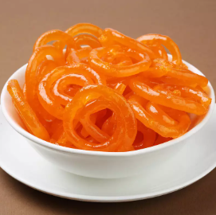
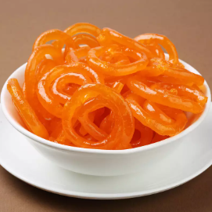

Ingredients:
- Sugar
- Instant Powder Mix
- Milk
Making Process:
Homemade gulab jamun is usually made up of khoya, a pinch of all-purpose flour/refined wheat flour/ wheat flour (optional), baking powder and clarified butter (ghee); milk kneaded to form a dough, moulded into balls, deep fried and dropped into simmering sugar syrup.
Ingredients:
- Corn flower
- Jaggery
- Oil
Making Process:
raditionally, the jalebi recipe is made with a batter of all purpose flour, gram flour (besan), baking soda and water that is fermented for several hours. The fermented batter is then poured in concentric circles in hot oil and deep-fried. These fried spirals are then soaked in a flavored sugar syrup and served.